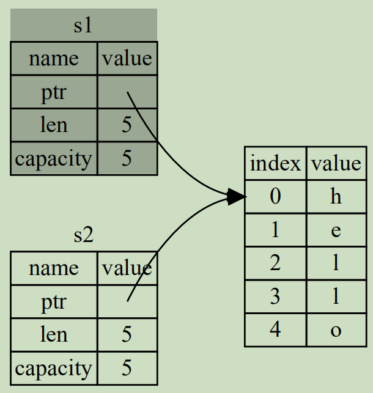
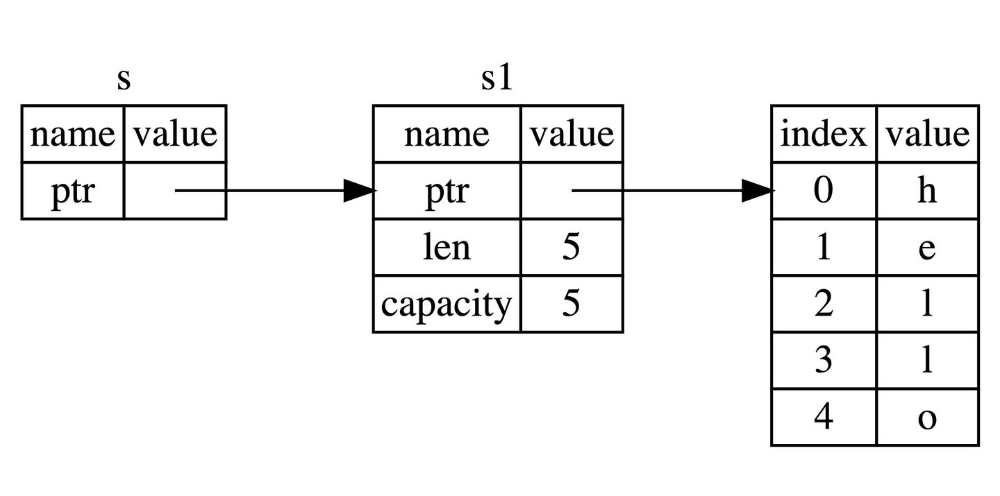
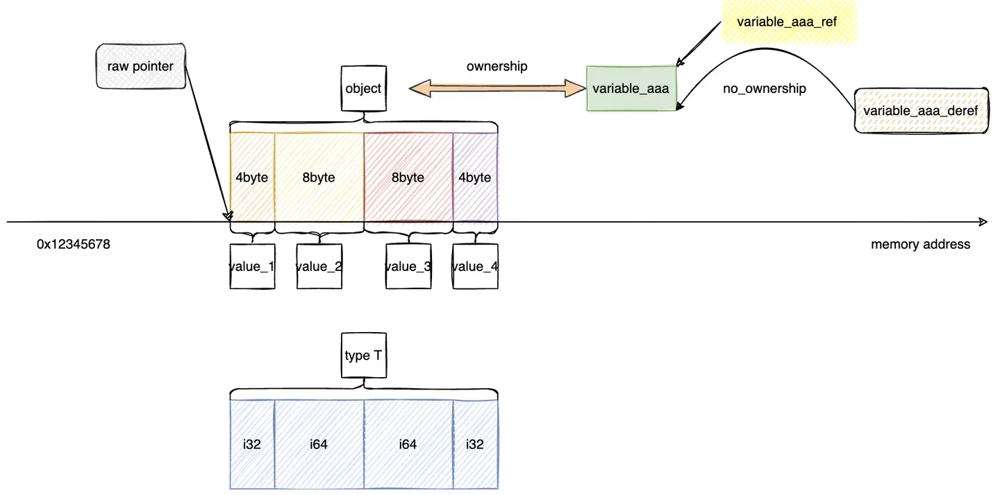

引言
所有编程语言都无法回避内存管理问题，我们理想的编程语言应该有以下两个特点：
- 内存对象能在正确的时机及时释放，这使我们能控制程序的内存消耗
- 在内存对象被释放后，不应该继续使用指向它的指针，这会导致崩溃和安全漏洞
由此诞生出两大阵营：1)以 C/C++ 为代表，手动管理内存的申请和释放，但避免内存泄漏和悬空指针是程序员的责任。2)依靠垃圾回收机制(Garbage Collection)自动管理，在所有指向内存对象的指针都消失后，自动释放对应内存。但这会严重影响程序性能，几乎所有现代编程语言，从 Java/Haskell 到 Python/Go 都在此列。
为了同时兼顾安全与性能，Rust 选择了第三种方式：编译期 GC，即编译时就决定何时释放内存，并将相关指令写入可执行程序。这种方式不会带来运行时开销，也可以保证内存和并发安全。为达到这个目的，Rust 语言提出了两个核心概念，即所有权(Ownership)和生命周期(Lifetimes)。这两大概念本质是对语法的一种限制，目的是在混沌中建立足够的秩序，以便在编译期验证程序是否安全。所有权系统解决了二次释放的问题，生命周期系统则解决了数据竞争和悬垂指针。
Rust 内存模型
在程序运行时，操作系统会为程序分配内存空间，并将之加载进内存。Rust 尚未严格定义其内存模型，但大致可分为：
- Stack（栈）
- 栈用于存储函数参数和局部变量，每个函数分配一个栈帧
- 内存对象的数据类型及其大小必须在编译时确定
- Heap（堆）
- 程序员主动申请，一般用来做大量数据读写，相比栈，堆分配效率较低
- Static Data（全局区）
- 存放可执行程序本身
- 存放一般的静态函数、静态变量，以及字符串字面量，在程序启动时初始化
所有权规则
Rust 的所有权系统基于以下事实:
- 编译器能够解析局部变量的生命周期，正确管理栈内存（入栈和出栈）
- 堆内存最终都是通过栈内存（指针和引用）来读取和修改
那么，能否让堆内存管理和栈内存管理一样轻松，成为编译期就生成好的指令呢？根据这个思路，Rust 将堆内存的生命周期和栈变量绑定在一起，当函数栈被回收，局部变量被销毁时，其对应的堆内存（如果有的话）也会被析构函数 Drop::drop 回收。
在 C++ 中，这种 item 在生命周期结束时释放资源的模式被称作资源获取即初始化 Resource Acquisition Is Initialization (RAII)
考虑一个普通的初始化语句：
|
|
Variable 被称为变量，Type 是其类型，而 Value 被称为内存对象，也叫做值。每一个赋值操作称为值绑定，因为此时不仅仅对变量进行了赋值，我们还把内存对象的所有权一并给予了变量。
语法辨析：既然堆内存对象都是由栈上指针进行管理的，那么当
Value包含形如String::from("xxx")或Box::new(xxx)的堆内存时，严格来说，Variable拥有的是栈上指针的所有权，但因为Type实现了回收堆内存的析构函数，Variable实质上拥有了堆内存的所有权，此时可以将栈内存和堆内存视为一个整体。Rust 所有权的本质，就是明确由谁负责释放资源。
Rust 所有权的核心规则很简单：
- 每一个内存对象，在任意时刻，都有且只有一个称作所有者(owner)的变量
- 当所有者（变量）离开作用域时，这个内存对象将被释放
编译器知道变量 Variable 何时离开作用域，自然也就知道何时回收内存对象 Value。而所有者唯一，保证了不会出现二次释放同一内存的错误。
切记，所有权是一个编译器抽象的概念，它不存在于实际的代码中，仅仅是一种思想和规则。
所有权转移
其他语言往往有深拷贝和浅拷贝两个概念，浅拷贝是只拷贝数据对象的引用，深拷贝是根据引用递归到最终的数据并拷贝数据。
Rust 为了适应所有权系统，没有采用深浅拷贝，而是提出了移动(Move)、拷贝(Copy)和克隆(Clone)的概念。
Move 语义
考虑以下代码：
|
|
将 s1 赋值给 s2 会发生什么？如果将 s1 宽指针复制一份给 s2，这违反了所有者唯一的规则，会导致内存的二次释放；如果拷贝一份 s1 指向的堆内存交给 s2，这又违背了 Rust 性能优先的原则。
实际上，这时候 Rust 会进行所有权转移(Move)：直接让 s1 无效（s1 仍然存在，只是失去所有权，变成未初始化的变量，只要 s1 是可变的，你还可以重新为其初始化），同时将 s1 栈内存对象复制一份，再将内存对象的所有权交给 s2，这样 s2 就指向了同一个堆内存对象，如图所示：

编译期的 mut 标识是作用在变量名上，而不影响内存对象。因此下面的例子中 s1 不可变，并不妨碍我们定义另外一个可变的变量名 s2 来写这块内存：
|
|
所有权检查
所有权检查是编译期的静态检查，编译器通常不会考虑你的程序将怎样运行，而是基于代码结构做出判断，这使得它看上去不那么聪明。比如依次写两个条件互斥的 if，编译器不会考虑那么多，直接告诉你不能移动 x 两次：
|
|
甚至把 Move 操作放在循环次数固定为 1 的 for 循环内，编译器也傻傻看不出来：
|
|
编译器优化
Move 语义不仅出现在变量赋值过程中，在函数传参、函数返回数据时也会发生，因此，如果将一个大对象（例如过长的数组，包含很多字段的 struct）作为参数传递给函数，可能会影响程序性能。
因此 Rust 编译器会对 Move 语义的行为做出一些优化，简单来说，当数据量较大且不会引起程序正确性问题时，它会优化为传递大对象的指针而非内存拷贝。[1]
总之，Move 语义虽然发生了栈内存拷贝，但性能并不会受太大影响。
Copy 语义
你可能会想，如果每次赋值都要令原变量失效，是否太麻烦了？为此，Rust 提出了 Copy 语义，和 Move 语义的唯一区别是，Copy 后原变量仍然可用。换言之，Copy 等同于“浅拷贝”，会对栈内存做按位复制，而不对任何堆内存负责，原变量和新变量各自绑定独立的栈内存，并拥有其所有权。显然，如果变量负责管理的内存对象包含堆内存，Copy 语义会导致二次释放的错误，因而 Rust 默认使用 Move 语义，只有实现了 Copy Trait 的类型赋值时才 Copy。
例如，标准库的 i32 类型已经实现了 Copy Trait，因此它在进行所有权转移的时候，会自动使用 Copy 而非 Move 语义，即赋值后原变量仍可用。
Rust 默认实现 Copy Trait 的类型，包括但不限于：
- 所有整数类型
- 所有浮点数类型
- 布尔类型
- 字符类型
- 元组，当且仅当其包含的类型也都实现
Copy的时候。比如(i32, i32)是Copy的，但(i32, String)不是 - 共享指针类型
*const T或共享引用类型&T（无论 T 是否实现Copy）
Copy Trait 是一个没有任何可重写方法的标记 Marker Trait，它只是告诉编译器“可以对这个类型执行按位复制”。因此，程序员无法自定义 Copy 的实现逻辑，对于需要实现 Copy 的自定义类型，通常通过 #[derive] 派生实现(必须同时派生 Clone Trait)：
|
|
也可以通过 impl 关键字实现：
|
|
注意，以上两种实现方式完全等价，且只有当某类型的所有成员都实现了 Copy，它才能实现 Copy。“成员(Member)”的含义取决于类型，例如：结构体的字段、枚举的变量、数组的元素、元组的项，等等。
Rust 标准库文档提到[2]，一般来说，如果你的类型可以实现 Copy，它就应该实现。但实现 Copy 是你的类型公共 API 的一部分。如果该类型可能在未来变成非 Copy，那么现在省略 Copy 的实现可能会是明智的选择，以避免 API 的破坏性改变。
那么哪些类型不能实现 Copy 呢？Drop 是与 Copy 互斥的 Trait，任何自身或部分成员实现了 Drop 的类型都不能实现 Copy，比如 String 和 Vec<T>。
Drop Trait 的定义如下，它只定义了一个方法，即析构函数 drop：
|
|
当一个值不再被需要，如离开作用域或被重新赋值，Rust 会运行析构器(destructor)将其释放。类型 T 的析构器包括：
- 如果类型具有
T: Drop约束，会调用<T as std::ops::Drop>::drop析构函数。 - 自动生成 "drop glue"，这会递归地为所有成员运行析构器：
- 结构体(struct)的字段按照声明顺序被销毁。
- 活动枚举变体的字段按声明顺序销毁。
- 元组中的字段按顺序销毁。
- 数组或切片的元素的销毁顺序是从第一个元素到最后一个元素。
- 闭包通过移动(move)语义捕获的变量的销毁顺序未明确指定。
- Trait 对象的销毁会运行其非具名基类(underlying type)的析构函数。
- 其他类型不会导致任何进一步的销毁动作发生。
通常你不必为你的类型实现 Drop，但对于直接管理资源的类型，手动实现仍是必要的。这个资源可能是内存、文件描述符、网络套接字，一旦不再使用该类型的值，应该立刻“清理”资源以释放内存、关闭文件或套接字。这就是 destructor 的工作，因此也就是 Drop::drop 的职责。
为了避免重复释放资源，编译器不允许手动调用 Drop::drop 析构函数，但偶尔又需要提前结束一个变量的生命周期(比如 Mutex 的守卫变量)，为此 Rust 标准库还提供了能手动调用的 std::mem::drop 函数：
|
|
这个空函数不是魔法：它接受任意类型的参数，但不做任何操作，值的所有者传入 std::mem::drop 函数，在函数返回前被自动丢弃。
除此之外，可变引用 &mut T 也没有实现 Copy，这会违反引用类型的借用规则。
Clone 语义
看见上面的 Clone Trait 了吗？它也是一个常见的 Trait，实现了 Clone 的类型变量可以调用 clone() 方法手动拷贝内存对象，它对复本的整体有效性负责，所以【栈】与【堆】都是 clone() 的复制目标，这相当于“深拷贝”。Clone 还是 Copy 的 Supertrait，看看 Copy Trait 的定义：
|
|
这表明，实现 Copy 的类型也必须实现 Clone。这是因为实现了 Copy 的类型在赋值时，会自动调用其 clone() 方法。如果一个类型是 Copy 的，那么它的 clone() 实现只需要返回 *self。
|
|
当调用 Clone 的默认实现时，操作的性能往往不高，但开发者可以自行优化 Clone 的实现逻辑，比如 Rc 的 clone() 用于增加引用计数，同时只拷贝少量数据，以提高效率。
小结
Move 语义等于“浅拷贝” + 原变量失效，复制栈内存并移动所有权；Copy 语义只进行“浅拷贝”，复制栈内存和所有权；Clone 语义必须显式调用，进行“深拷贝”，复制栈内存、堆内存和所有权。
另外，在 1)赋值 2)参数传入 3)返回值传出时 Move 和 Copy 行为被隐式触发，而 Clone 行为必须显示调用 Clone::clone(&self) 成员方法。
所有权树
每个复合类型(tuple/array/vec/struct/enum)变量，和它的子成员会形成一棵所有权树，其中任何一个成员节点 A 转移所有权或离开作用域，A 的子成员将与其保持行为一致。当成员 A 所有权转移后，除非为 A 重新初始化，否则 A 的所有父成员将失去所有权（但不属于 A 子成员的仍然可用）：
|
|
借用
和 C/C++ 一样，Rust 有裸指针(Pointer)类型和引用(Reference)类型，分别是共享引用（不可变引用） &T 和可变引用 &mut T，常量裸指针（不可变指针） *const T 和可变裸指针 *mut T，他们的值都是 T 类型对象的内存地址，都可以通过解引用操作访问内存对象。
区别在于，裸指针是不安全的操作，只能在 unsafe 块中使用；引用则是被编译器加了限制的指针，遵循借用规则(Borrowing Rules)并由编译器检查，以保证安全。
为了方便，Rust 引用的作用域比普通变量更短：普通变量的作用域从初始化持续到最近的花括号 }；引用的作用域从借用开始，一直持续到它最后一次使用的地方。这种优化行为被称为非词法作用域生命周期(Non-Lexical Lifetimes, NLL)。
创建一个引用的行为称为借用(Borrowing)，代表着引用会借用（而非获得）原变量对内存对象的所有权。当你不想转移所有权时，可以通过借用访问内存对象，例如：
|
|
传入 calculate_length() 的是 s1 的共享引用，参数 s 会借用 s1 的所有权，如图所示：

Rust 存在三条基本的借用规则：
- 共享引用(
&T)有效期间，只能由被引用对象借出共享引用，只能以只读的方式访问被引用对象 - 可变引用(
&mut T)有效期间，无法由被引用对象借出任何引用，无法访问被引用对象 - 引用必须总是有效的，即引用的生命周期不能超过原变量的生命周期。所以当存在借用时，原变量不能转移所有权，但可以 Copy 或 Clone
换言之，在同一时刻，要么只存在一个可变引用(&mut T)，要么存在任意数量的共享引用(&T)。正因如此，可变引用 &mut T 没有实现 Copy，否则很容易违反借用规则。相反，共享引用是可 Copy 的，即把共享引用赋值给另一个共享引用后，可以继续使用。
为什么会有这样的规则呢？因为 Rust 希望在同一时刻，一份资源只能被至多一个变量名读写，或者被多个变量名读取。由此，下面这段代码会报错：
|
|
解引用
解引用操作 *r 会得到一个被称为影子变量的东西，可以理解为没有所有权的变量别名。它可以用来对内存对象进行读写，但不能通过它转移所有权，这会影响本体对于内存对象的掌控（可以 Copy 或 Clone）：
|
|
引用类型的所有权
Rust 中所有的值都有所有权，引用类型的值也不例外。引用不拥有指向对象的所有权，但引用变量拥有自身地址值的所有权：
|
|
我们知道，共享引用实现了 Copy，自然也实现了 Clone，而下面的结构体 Person 没有实现 Clone，因此 b.clone() 只能复制引用 b，不能复制引用指向的内存对象。虽然这能通过编译，但 clippy 不建议我们这样做，因为它的行为相当于 Copy 操作，很可能不是我们希望的克隆效果。
|
|
但如果为结构体 Person 实现 Clone，再去 clone() 引用类型，将没有错误提示：
|
|
前后两个示例的区别，仅在于引用所指向的类型 Person 有没有实现 Clone。原因在于，方法调用时会先查找与调用者类型匹配的方法，查找过程具有优先级，找到即停。由于 . 操作可以自动引用/解引用，如果引用/解引用前后的两种类型都实现了同一方法(如 clone())，Rust 编译器将按照查找顺序来决定调用哪个类型上的方法[3]
如果 b 是没有实现 Copy 和 Clone 的可变引用，b.clone() 只能得到 Person 类型（前提是 Person 实现了 Clone）。
小结
这张图展示了变量、类型、内存对象、值，引用、解引用和裸指针的概念：

重借用
上文提到，借用检查不允许对一个实例的多个可变引用，也不能同时存在共享和可变引用。但对解引用得到的影子变量进行借用（重借用）却是可行的：
|
|
这段代码的大括号内，同时存在 r1 r2 两个指向同一变量 s 的可变引用，但编译器不会报错。这是因为编译器看到 *r1 的时候，通常很难确定解引用得到的对象是什么，所以借用检查不会把 *r1 跟 s 当成同一个对象，自然不会报错。
重借用遵循的规则与借用规则类似：
- 不可变重借用的有效期间，原始引用只能继续重借用出共享引用，只能以只读的方式访问原始引用
- 可变重借用的有效期间，无法由被原引用重借用出任何引用，无法访问原始引用
可变引用的重借用实际上是在这个可变引用的生命周期内分化出多个不相交的、较小范围（生命周期）的可变引用。范围不相交意味着遵守了引用的规则："At any given time, you can have either one mutable reference or any number of immutable references"。
|
|
上述代码会报错，self.0 是 self 的不可变重借用，而 self.bar() 是对 self 的可变重借用，包括了第一个元素这条路径，所以编译失败。假如把 bar() 签名改成 fn bar(&self) 则编译成功。
隐式重借用
|
|
你可能会好奇，明明传入方法的是引用类型，为什么报错信息中会显示 *r1？这是因为自动发生了隐式重借用，r1.len() 实际上是 String::len(&*r1)，同理 r1.push('3') 实际上是 String::push(&mut *r1, '3')。
隐式重借用并非多此一举，len() 和 push() 的方法签名分别是 pub fn len(&self) -> usize 和 pub fn push(&mut self, ch: char)。没有隐式重借用，可变引用 r1 将无法直接调用 len()，而 r1.push('3') 调用会转移可变引用 r1 的所有权，导致 r1 之后无法使用。
实际上，隐式重借用几乎无处不在：
|
|
对共享引用 &T，可以认为发生了重借用, 也可以认为直接发生 Copy，因为效果完全一样。
手动重借用
下面这两种情况[4]，from() 函数不会自动重借用：
|
|
|
|
关于上述现象，有这么几个猜想：
- 重借用是一种 type coercion，结合 type coercion 的文档，type coercion 可能只能在源类型和目的类型都知道的情况下进行
- rustc 的类型推断进程很可能没有 100% 完成，所以一部分值的类型是不是引用仍然是不知道的，于是此时重借用就不会发生
- 对参数的分析很可能是从第一个参数到最后一个参数依次进行的，如果对前面参数的分析推断到了更多的类型信息，那么对后面参数的分析就会利用前面得到的类型信息
|
|
-
参考：https://stackoverflow.com/questions/30288782/what-are-move-semantics-in-rust
-
参考：https://doc.rust-lang.org/std/marker/trait.Copy.html#when-should-my-type-be-copy
-
参考：https://rustc-dev-guide.rust-lang.org/method-lookup.html?highlight=lookup#method-lookup
-
参考：https://rustcc.cn/article?id=28fedcbc-d0c9-41e1-8d95-de73a578a078